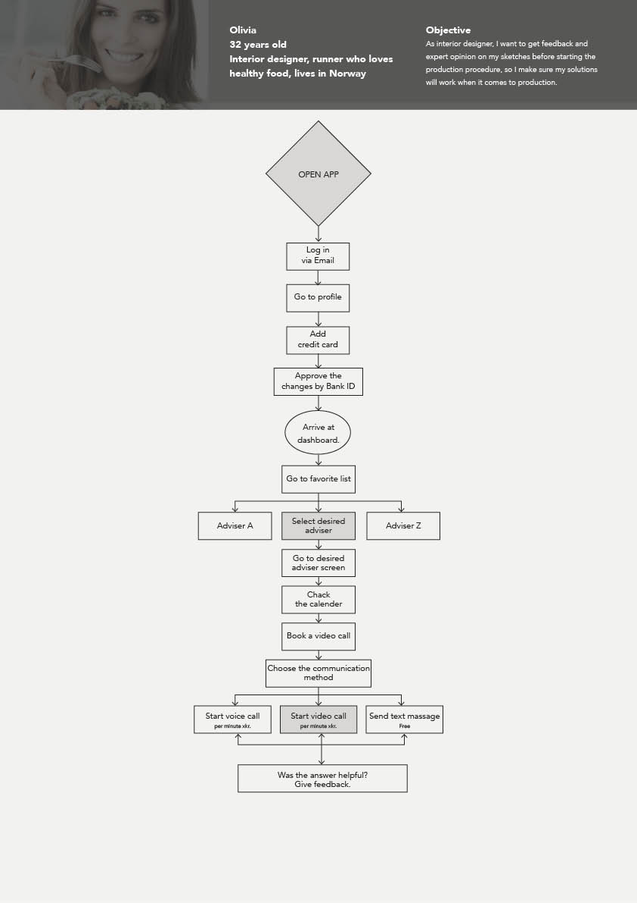
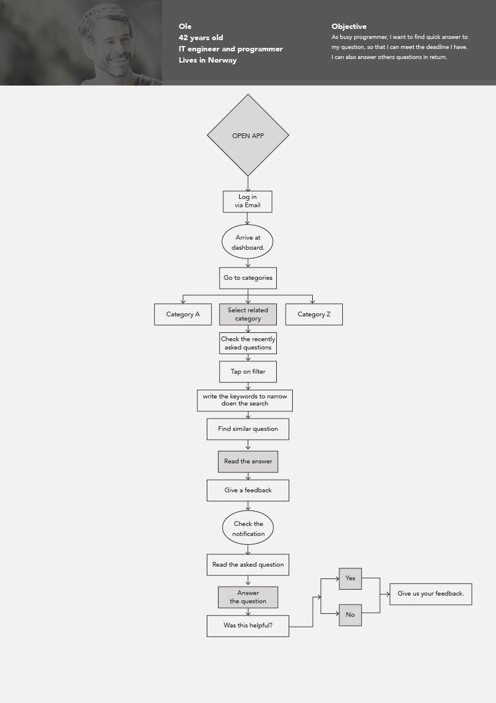
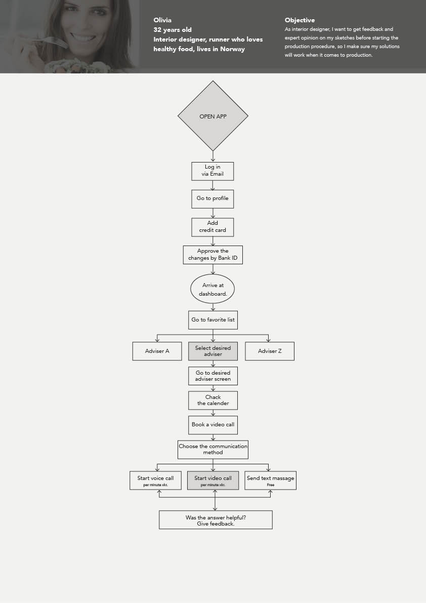
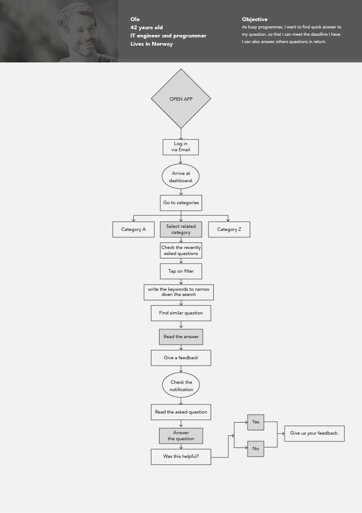

Expert app
Designing an app to enable anyone, anywhere to instantly chat with an expert in virtually different field. The project done by Lean UX allowing me as the only person working on this project to build and test assumptions and improve the user experience in iterative cycle.

Brief
Problem
Advice seekers need responsive and trustworthy service that helps them to find solutions for their enquiries in a quick and efficient way. This service should allow user to have two ways communication for asking more detailed questions if needed. I need to find a way encouraging expert people respond quickly to the advice seekers.
Potential Solutions
Designing an app that offers service to advice seekers based on categorised proficiency. In this app user is able to post enquiries to get advice from experts, directly chat with one specific expert or even arrange a paid video call. Paid service can encourage experts to be active in the app and provide better service for advice seekers. Allowing user to give feedbacks and reviews help to identify quick, efficient and trustworthy services.
Goal
The objective of this app is to provide users a simple and intuitive way for quick contact with an expert in many different fields seeking information and professional support.
Discovering
Understanding the user
I started by examining competitors, creating an informative analysis to find out what is done and what is missing in the market. In order to understand the user, I also conducted interviews. By exploring and analysing collected data I discovered user needs and pain points.
Competitive analysis


Key takeaways from user interviews
Concepting
User personas
After I got solid understanding of usere needs and problems, sorting and mapping collected information provided me great insights to start creating personas and user flows.
Next step was createing sitemap to outline the hierarchy of application. I also conducted an online card sorting test by using OptimalSort to refine the sitemap.

User flows
 



Sitemap

Designing
Prototyping
Once I had solid structure I started creating low-fidelity prototype, highlighting only the high-level functionality of a design. Next step was adding more details and functionality to get closer to mid-fidelity prototype. In an iterative approach and rapid prototyping, I was able to quickly mock up the feature and validate it with users, developers and designers. Basic functionality has been tested by conducting usability test an A/B & Preference test. Once tests results discussed and agreed upon, high-fidelity prototype took place.
Low-fidelity prototype
Mid-fidelity prototype
High-fidelity prototype
Testinging
In an iterative approach and rapid prototyping, I was able to quickly mock up the feature and validate it with users, developers and designers. Basic functionality has been tested by conducting usability test an A/B & Preference test. Once tests results discussed and agreed upon, high-fidelity prototype took place.
Usability test results

A/B & Preference test

Visualising
Refining the Design
In this phase I applied Gestalt psychology and visual design principles to my prototype. I also made design strategy in order to boost user engagement with emotional design by adding delightful animations and using color strategically.
I used 6-column grid for mobile and 12-column for desktop screens which makes it possible to divide it by 2 and 3. I also created a style guide and language system (following iOS Human Interface guideline) to make my design easier to reuse and standardise.
Language system